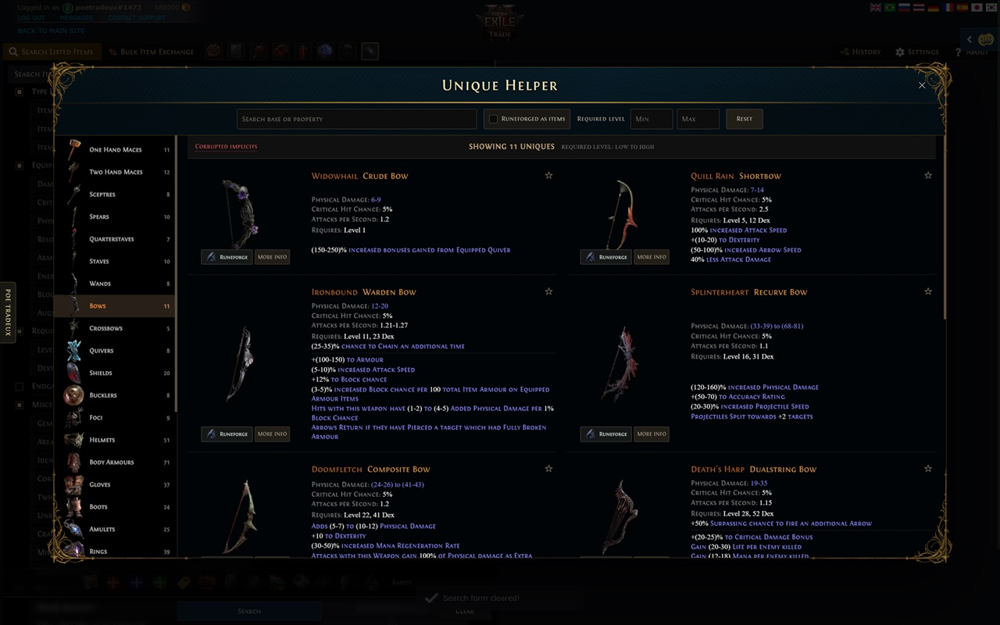
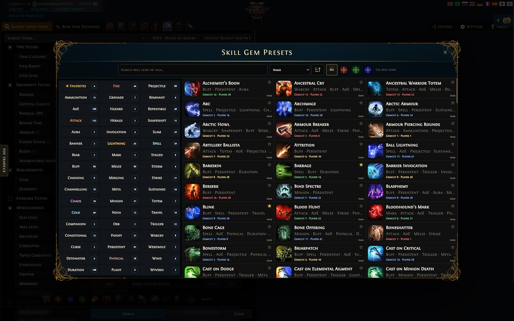
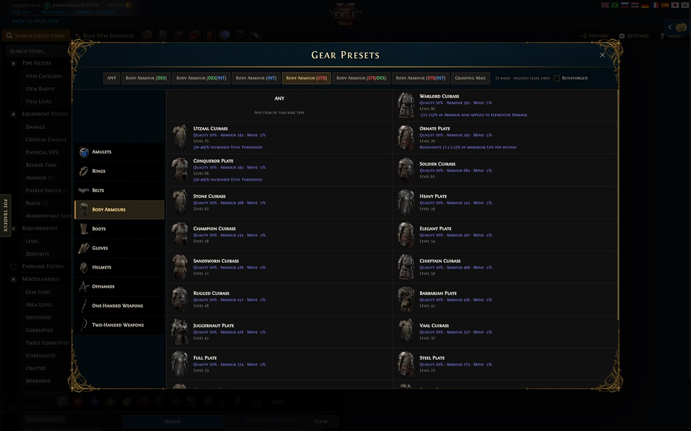
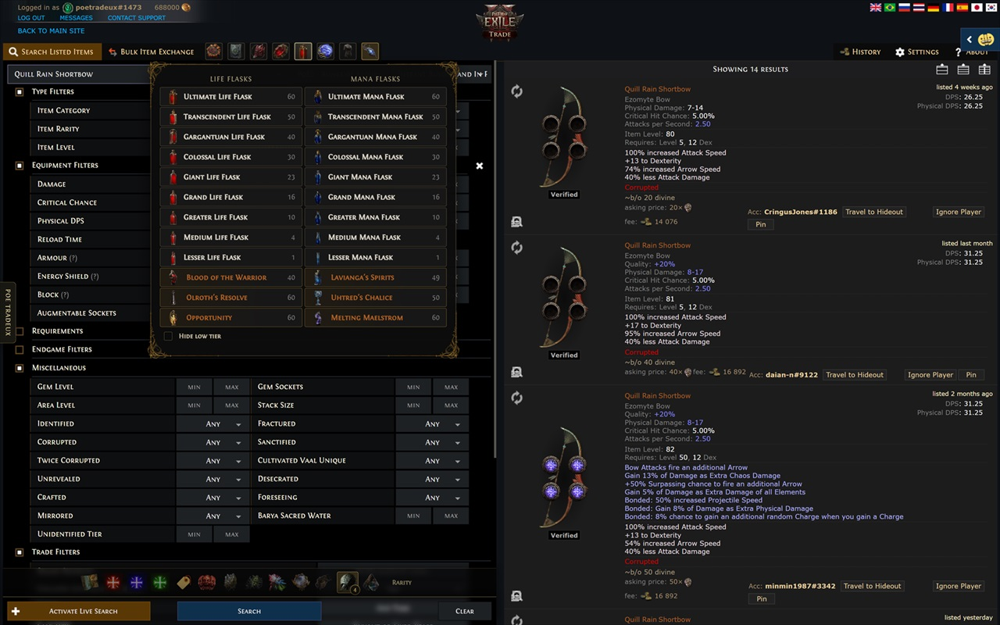
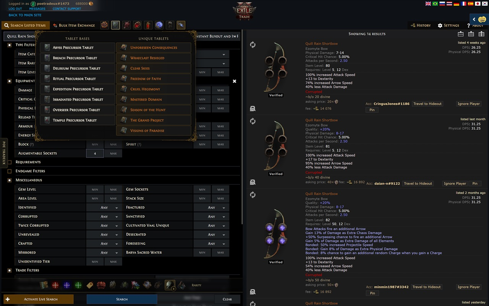

Faster filters
- Quick rarity selection and clear-search action.
- One-click corrupted, fractured, desecrated, crafted, mirrored, and sanctified filters.
- Quality, augmentable-socket, gem-level, and gem-socket controls.
Path of Exile 2 trade tools
POE TradeUX is a Chrome extension that enhances the official Path of Exile 2 trade interface with faster filters, item presets, stat tools, and optional layout improvements. It works with the site's native trade form instead of replacing it.
/trade2/* pages and stays disabled on PoE 1 trade.
storage.
The extension keeps common trade actions close at hand while preserving the official search page's controls and results.
NOT stat groups.Explore the extension's item browsers and presets. Select any screenshot to open the full 1280 × 800 image.





POE TradeUX does not collect trade-search history, search text, trade-page URLs, credentials, cookies, analytics, advertising IDs, or personal information. Item artwork is bundled with the extension.
Chrome local storage is used only for interface preferences and favorite stat, gem, and unique-item identifiers. Read the complete Privacy Policy.
This product isn't affiliated with or endorsed by Grinding Gear Games in any way. Path of Exile and related game materials are the property of their respective owners.